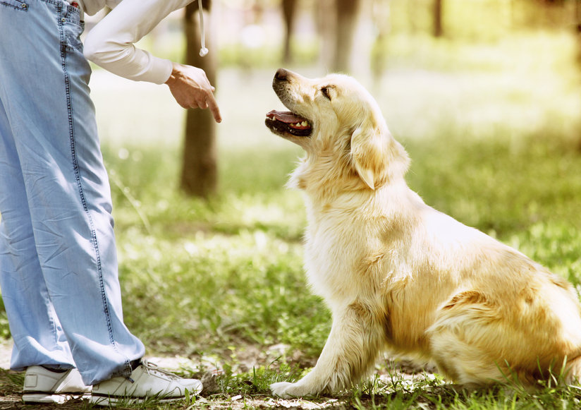

더불어 살기
애완견종류
강아지종류
건강돌보기
더불어살기

애완동물과 외출할 때 주의할 사항
인식표 부착하기
목줄 등 안전조치하기
배설물 수거하기
예방접종 실시하기
공원에서 하지 말아야 할 행동
심한 소음 또는 악취를 나게 하는 등 다른 사람에게 혐오감을 주는 행위
애완 동물의 배설물을 수거하지 않고 방치하는 행위
애완동물을 통제할 수 있는 줄을 매지 않고 입장하는 행위